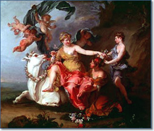

Global forces shape the future
The future of Europe’s rural areas is for an important
extent shaped by more or less autonomous global driving forces.
Especially the development of (global) demography and macro
economic growth outline the trends for rural Europe. |
 |
Role of farming changes
The total agricultural production in the EU remains more or
less intact in all scenarios. In the EU12 the significance of
farming for the economy will decline rapidly towards the level
of the EU15, leading to a significant decrease in agricultural
employment. |
|
Agricultural abandonment will not
decline
The process of agricultural abandonment will not slow down.
Agricultural abandonment will occur up to 14% of current agricultural
land and will especially take place in marginal areas of the
EU15. |
|
Large impact of bio-energy
Stimulation of bio-energy crops will lead to higher income and
higher employment in agriculture. Decline of the agricultural
area will then be limited to a maximum of 6 instead of 14%. |
|
CAP raises income
Higher CAP support – especially the income support - will
raise agricultural income but cannot prevent an overall decrease
of agricultural income. |
|
Positive future
Overall the future for rural areas in the EU27 looks positive.
Many indicators, such as GDP, overall employment, biodiversity
and carbon sequestration, will develop in a positive way, but
regional differences remain large. |
|
Understanding the scales
To grasp opportunities and to prevent threats from happening
policies on different scale levels – global, EU, national
as well as regional – will still be needed. Understanding
the interaction of these scales is essential for good governance. |
|
Explore this yourself with the interactive
tool!
The Eururalis tool enables you to explore the future of Europe.
You can compose your preferred policy scenario by choosing one of
the contrasting reference scenarios and adapt this base scenario
by adjusting the settings for the strategic policy options. The
results of your policy scenario will be provided to you in maps
and graphs about People, Planet and Profit issues and on Land-use
for the next decades in 10 year time steps. An integrated overview
is presented in a so-called spider diagram. By interacting with
the policy options and the scenarios you will get an idea of the
possible futures of Europe and of impact of the policy options on
reaching your desired future Europe.
|
The Greek superior God, Zeus, changed himself into an attractive
bull and seduced the beautiful maiden EUROPE. He then took her on
his back through fields, mountains, rivers and forests. This symbolizes
the beauty and diversity of Europe's rural area that still is present
in many regions.

In the background you can find detailed information on the methodology,
models, data and assumptions used in Eururalis 2.0. You can also
find documents and presentations developed in the Eururalis 2.0
proces. In the colofon you can see a list of experts that helped
develop Eururalis.
|